İklim Krizi
Soyut raporları ve karmaşık grafikleri bir kenara bıraktık. İklim krizi uzak kutuplardaki eriyen buzullardan ibaret değil; her gün soluduğumuz havada, attığımız her adımda ve aldığımız her kararda saklı. Gerçek, tüm çıplaklığıyla karşımızda duruyor.
Tahmini okuma süresi: ~18 dakika
Sürdürülebilir
Kalkınma
Hedefleri
Birleşmiş Milletler'in 17 hedefi, gezegeni ve insanlığı kurtarmak için çizilen küresel haritadır. İklim krizi bu hedeflerin tamamını tehdit ediyor.
Neler Oluyor?
Buzullar eriyor, denizler ısınıyor, termometreler rekor kırıyor. Kutuplardan Türkiye kıyılarına, gezegenin şu anda verdiği sinyalleri kanıtlarıyla ve rakamlarıyla bir araya getirdik.
Veri güncelliği: aşağıdaki küresel göstergeler NASA/NOAA'nın belirttiği tarihlere aittir (bkz. her kartın altındaki etiket); Türkiye göstergeleri ÇŞB Çevresel Göstergeler raporunun en güncel yayınına (çoğunlukla 2018) dayanır (bkz. Türkiye'de Sıcaklık).
Küresel Sıcaklık Yükseliyor
Gezegenin ortalama yüzey sıcaklığı sanayi öncesi döneme (1850-1900) kıyasla yaklaşık 1,47°C arttı; bu artışın büyük kısmı son 40 yılda yaşandı. NASA GISS kayıtlarına göre 2024, ölçümlerin başladığı 1880'den bu yana kaydedilen en sıcak yıl oldu.
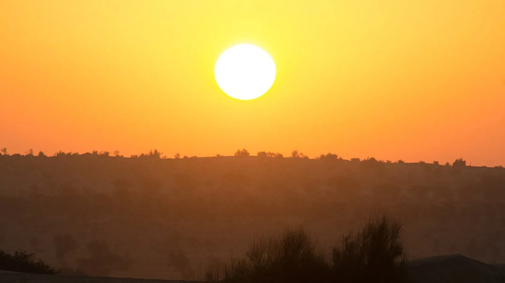
Okyanuslar Isınıyor
Okyanuslar fazladan ısının büyük kısmını emiyor; ilk 100 metresi 1969'dan bu yana 0,33°C ısındı. Dünya, fazladan biriken enerjinin %90'ını okyanuslarda depoluyor.
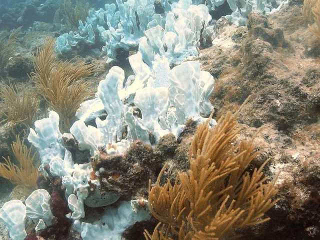
Buz Tabakaları Küçülüyor
NASA'nın GRACE uydu verilerine göre Grönland buz tabakası 1993-2019 arasında yılda ortalama 279 milyar ton, Antarktika ise 148 milyar ton buz kaybetti.
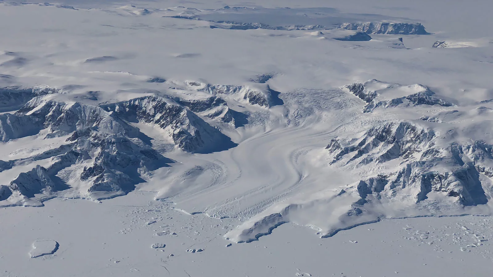
Buzullar Geri Çekiliyor
Alpler'den Himalayalar'a, Andlar'dan Alaska ve Afrika'ya kadar dünyanın hemen her yerindeki buzullar hızla küçülüyor.
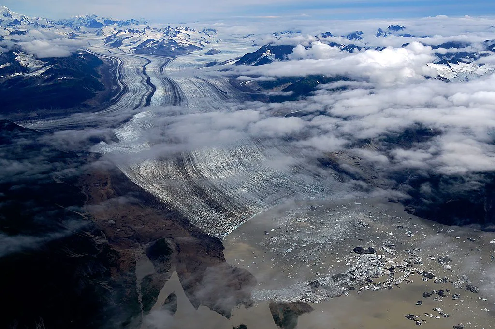
Kar Örtüsü Azalıyor
Uydu gözlemleri, Kuzey Yarımküre'deki ilkbahar kar örtüsünün son 50 yılda azaldığını ve karların her geçen yıl daha erken eridiğini gösteriyor.
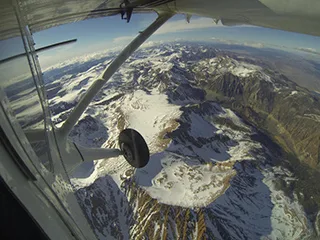
Deniz Seviyesi Yükseliyor
Küresel deniz seviyesi son yüzyılda yaklaşık 20 santimetre yükseldi. Son yirmi yıldaki yükseliş hızı ise geçen yüzyılın neredeyse iki katı ve her yıl biraz daha hızlanıyor.
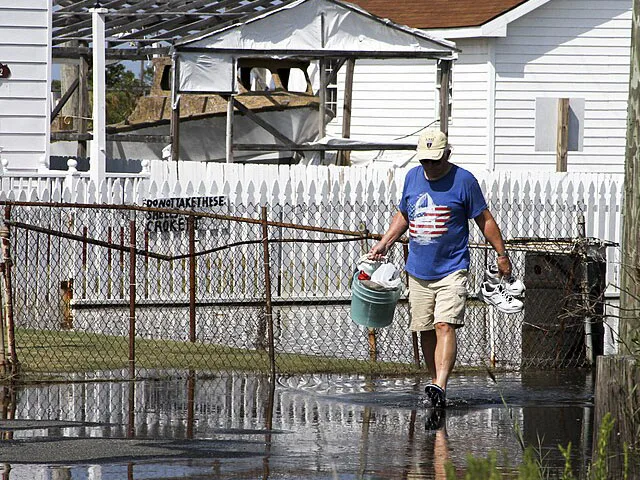
Arktik Deniz Buzu Azalıyor
Arktik deniz buzunun hem kapladığı alan hem de kalınlığı son birkaç on yılda hızla azaldı.
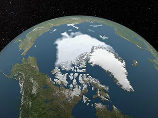
Aşırı Hava Olayları Sıklaşıyor
ABD'de 1950'den bu yana rekor yüksek sıcaklık olayları artarken rekor düşük sıcaklık olayları azalıyor. Yoğun yağış olaylarının sayısı da giderek artıyor.
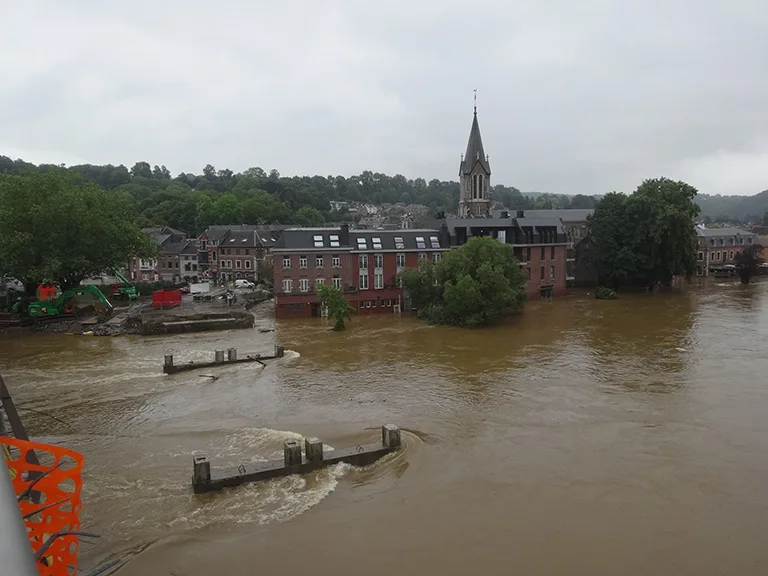
Orman Yangınları
Akdeniz iklim kuşağında yer alan Türkiye ormanlarının büyük bölümü yangın tehdidi altında. Orman Genel Müdürlüğü'nün güncel verileri, 2018'e kıyasla hem yangın sayısının hem de yanan alanın belirgin biçimde arttığını gösteriyor. Yine de Türkiye'de yangın başına ortalama yanan alan (3,73 ha, 2007-2016) Akdeniz havzasındaki komşularından belirgin biçimde düşük: Yunanistan'da 41,98 ha, İtalya'da 12,72 ha, İspanya'da 6,83 ha, Portekiz'de 4,6 ha (EFFIS).
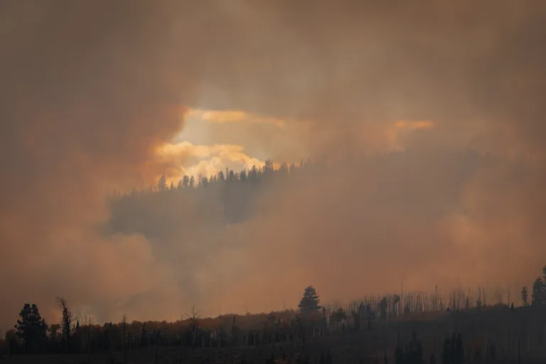
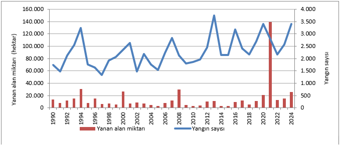
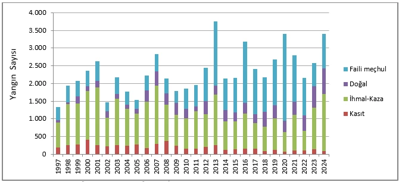
Okyanusların Isınması
Gösterge, deniz suyu yüzey sıcaklığının yıllık değişimini ifade ediyor. İklim değişikliğinin en doğru göstergelerinden biri deniz suyundaki ısınma ve soğumalar; bu durum hem denizlerin ekolojik yapısını hem de kıyı ekonomilerini doğrudan etkiliyor.
NASA: Okyanus Isınmasının Etkileri
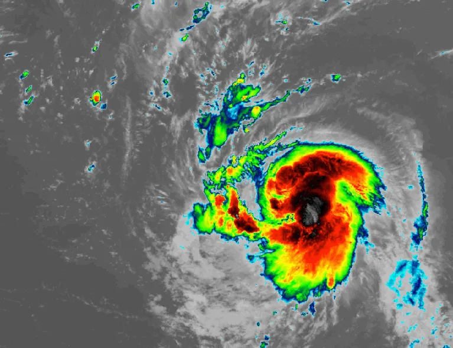
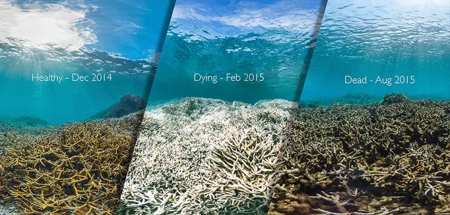
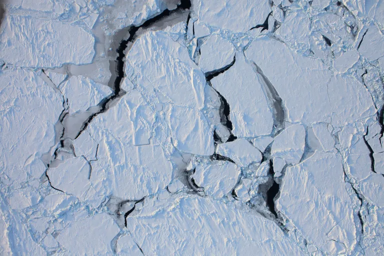
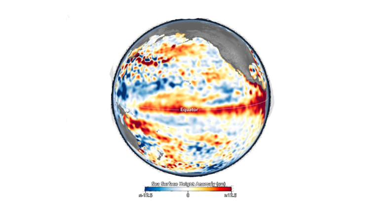
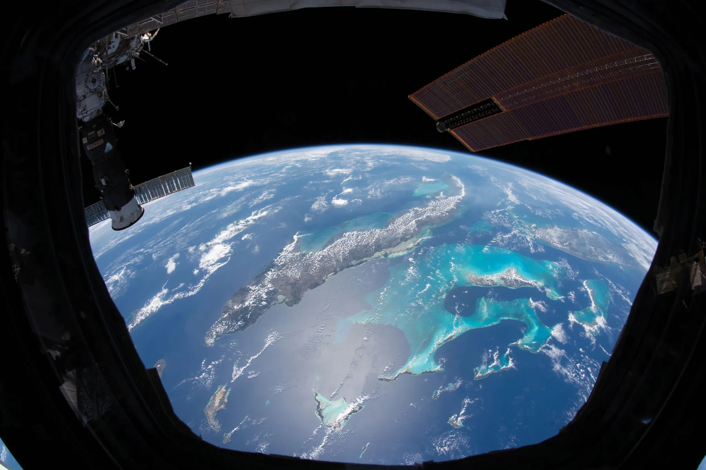
Global Isınma
NASA: Sıcaklık Nasıl Ölçülüyor?
NASA'nın Goddard Uzay Çalışmaları Enstitüsü (GISS), ~45 yıldır küresel sıcaklığı izliyor. 2024, kayıtlara geçen en sıcak yıl oldu: 1951-1980 bazına göre +1,28°C, 1850-1900 (sanayi öncesi) bazına göre ise +1,47°C. GISS "sıcaklık" yerine "anomali" (sapma) kullanıyor, çünkü yakın istasyonlar arasındaki sıcaklık sapmaları ~1.300 km'ye kadar güçlü korelasyon gösteriyor, bu da seyrek kara verisinin güvenilir biçimde enterpole edilmesine imkân tanıyor. Ölçek için: son buzul çağını tetikleyen küresel sıcaklık düşüşü de sadece 5°C'ydi.
Türkiye'de Sıcaklık
2018 yılında Türkiye'nin ortalama sıcaklığı 15,4°C ile 1981-2010 ortalamasının (13,5°C) 1,9°C üzerinde gerçekleşti; aynı yıl dünya ortalaması da 14,65°C ile kendi 1981-2010 bazının (14,29°C) 0,36°C üzerindeydi. En düşük sıcaklık -23,2°C ile Aralık ayında Ardahan'da, en yüksek ise 47,4°C ile Temmuz ayında Cizre'de kaydedildi. 1971-2023 döneminde Türkiye ortalama sıcaklıklarında 2007'den bu yana (2011 hariç) pozitif anomali gözleniyor; 1960-2020 arasında donlu gün sayısı, özellikle ülkenin doğu ve iç kesimlerinde belirgin biçimde azalma eğiliminde.
Isınmanın etkisi enerji talebine de yansıyor: 2007-2018 ortalamasına kıyasla 2018'de Isıtma Gün-Derecesi 2058'den 1725'e (-%16) düşerken, Soğutma Gün-Derecesi 358'den 381'e (+%6) yükseldi: evleri ısıtma ihtiyacı azalırken serinletme ihtiyacı artıyor.
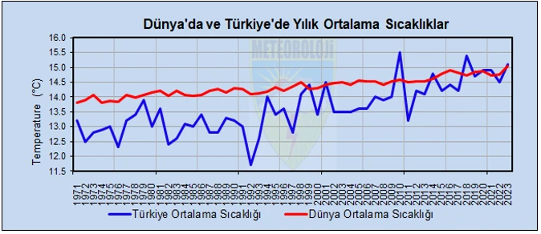
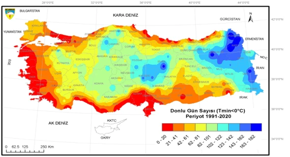
İklim Krizinin Sebebi Enerji ve Fosil Yakıtlar
İklim değişikliği gökten inmedi; onu biz, özellikle son 150 yılda fosil yakıt yakarak, ormanları yok ederek ve üretim biçimimizle inşa ettik. Sebepleri bilmek, çözüm yolunu gösteriyor.
Enerji ve Fosil Yakıtlar
Elektrik üretimi, ısınma ve sanayi için kömür, petrol ve doğal gaz yakmak, küresel sera gazı emisyonlarının %75'inden fazlasının kaynağı. Her kilovat saat hâlâ büyük ölçüde fosil yakıtla üretiliyor.
Türkiye'de emisyon: 2018 yılında Türkiye'nin toplam sera gazı emisyonu, 1990'a göre %137,5, 2015'e göre ise %10,2 artarak 520,9 milyon ton CO₂ eşdeğerine yükseldi; aynı dönemde AB-28 ülkelerinin toplam emisyonu ise %21 azaldı. Kişi başına emisyon 1990'da 4 ton/kişi iken 2018'de 6,4 ton/kişiye çıktı (AB-28 ortalaması: 8,6 ton/kişi); enerji sektörü %71,6 ile toplam emisyonların en büyük tek kaynağı.
Elektrik tüketimi: Kişi başına elektrik tüketimi 1990'da ~1.000 kWh iken 2018'de neredeyse dört katına çıkarak 3.709 kWh'e ulaştı. Toplam elektrik üretimi aynı dönemde %430 arttı (304,8 TWh, 2018); yine de yenilenebilirlerin payı (%32,5) AB-28 ortalamasına (%32,1) yakın.
Garzweiler Açık Maden Ocağı
Almanya'nın en büyük linyit ocaklarından biri; kömür çıkarmak için köyler boşaltılıyor, ormanlar kesiliyor ve binlerce hektarlık alan devasa bir çukura dönüşüyor.
Çin Termik Santralleri
Dünya kömür tüketiminin yarısından fazlasını tek başına gerçekleştiren Çin'de, binlerce aktif termik santral küresel kömür kaynaklı CO₂ emisyonunun en büyük tekil kaynağını oluşturuyor.
Nijer Deltası
Boru hatlarındaki sızıntılar ve fazla gazın yakılması (flaring), on yıllardır bölgenin sucul ekosistemlerini kirletip yerel toplulukların tarım ve balıkçılık gelirini yok ediyor.
Batı Teksas Permian Havzası
ABD'nin en büyük ham petrol üretim merkezi; kuyu başlarından sızan metan, bazı ölçümlerde havzanın yakıt tüketiminden kaynaklanan emisyondan bile daha güçlü bir ısınma etkisi yaratıyor.
Avustralya LNG Tesisleri
Dünyanın önde gelen sıvılaştırılmış doğal gaz ihracatçılarından Avustralya'da, kıyı tesislerinden kaynaklanan metan kaçakları uydu verileriyle ancak son yıllarda sistematik olarak izlenmeye başlandı.
Hindistan Kömür Madenleri
Jharkhand ve Odisha eyaletlerindeki açık ocak madenler, milyonlarca insanı hem solunum yollarını tahriş eden kömür tozuna hem de bölgenin yüksek CO₂ emisyon yüküne maruz bırakıyor.
Ormansızlaşma
Ormanlar atmosferdeki karbonu emen doğal süngerlerimiz. Her yıl kaybedilen milyonlarca hektar orman, hem bu karbon yutağını yok ediyor hem de depolanmış karbonu atmosfere geri salıyor.
Türkiye istisnası: ÇŞB Çevresel Göstergeler raporuna göre Türkiye'nin toplam orman alanı küresel eğilimin aksine büyüyor: 1973'te 20,2 milyon hektar iken 2018'de 22,6 milyon hektara (ülke yüzölçümünün %29'u) ulaştı. Sağdaki grafik bu büyümeyi gösteriyor; soldaki grafikteki küresel nedenler (Amazon, Kongo, Borneo) ise dünya genelinde hâlâ geçerliliğini koruyor. Büyüyen orman alanı daha fazla karbon da tutuyor: ormanların ve işlenmiş odun ürünlerinin yıllık karbon tutumu 1990'da 55,8 milyon ton CO₂ eşdeğeriyken 2017'de 102,3 milyon tona ulaştı.
Amazon Yağmur Ormanları
Brezilya'da sığır otlatma ve soya tarımı için her yıl milyonlarca hektar orman açılıyor; dünyanın en büyük karbon yutaklarından biri bu baskı altında küçülmeye devam ediyor.
Borneo Adası
Endonezya ve Malezya'da palmiye yağı plantasyonları için temizlenen ormanlar, orangutan başta olmak üzere adaya özgü pek çok türün yaşam alanını yok ediyor.
Kongo Havzası
Dünyanın Amazon'dan sonraki en büyük yağmur ormanı, kereste ticareti, madencilik ve küçük ölçekli tarımın artan baskısı altında giderek küçülüyor.
Endonezya Turbalıkları
Palmiye yağı tarımı için kurutulan tropikal turbalıklar, binlerce yıldır toprakta biriken karbonu hızla atmosfere salıyor; kurumuş turba aynı zamanda büyük orman yangınlarına zemin hazırlıyor.
Cerrado Savanaları, Brezilya
Amazon kadar gündeme gelmese de Cerrado, küresel soya ve sığır talebinin baskısıyla her yıl yaklaşık 1 milyon hektar kaybediyor; oysa bölge kendine özgü zengin bir biyoçeşitliliğe ev sahipliği yapıyor.
Doğu Afrika Miombo Ormanları
Odun kömürü üretimi ve geçimlik tarım, Tanzanya ve Mozambik'teki Miombo ormanlarını hızla tahrip ediyor; yerel halkın çoğu için uygun fiyatlı bir enerji alternatifi bulunmuyor.
Sanayi Üretimi
Çimento, çelik ve kimyasal üretimi, hem enerji yoğun süreçler hem de üretimin kendisinden kaynaklanan kimyasal reaksiyonlar nedeniyle emisyonların önemli bir kısmını oluşturuyor.
Türkiye'de emisyon: Endüstriyel işlemler ve ürün kullanımı, Türkiye'nin 2018 toplam sera gazı emisyonunda %12,5 pay ile enerjinin ardından ikinci büyük kaynak: 1990'daki 22,8 milyon tondan 2018'de 65,2 milyon tona çıktı.
Ruhr Bölgesi Çelik Tesisleri
Almanya'nın tarihi ağır sanayi merkezinde yüksek fırınlar ve çelik tesisleri yüzyılı aşkın süredir bölgenin emisyon profilini belirliyor; dönüşüm için yeşil hidrojen tabanlı üretim planlanıyor.
Çimento Fabrikaları
Hindistan ve Çin'deki tesisler küresel çimento üretiminin yarısından fazlasını karşılıyor; hem yüksek sıcaklıkta pişirme süreci hem de kalkerin kimyasal dönüşümü büyük miktarda CO₂ açığa çıkarıyor.
Teksas Körfez Kıyısı
Yoğun petrokimya tesisleri kompleksi, ABD'nin en büyük endüstriyel emisyon bölgelerinden birini oluştururken çevredeki yerleşim bölgelerinde hava kalitesi sorunlarını da beraberinde getiriyor.
Çin Alüminyum Tesisleri
Küresel alüminyum üretiminin %60'ından fazlasını gerçekleştiren Çin tesisleri büyük ölçüde kömür enerjisiyle çalışıyor; bu da ton başına düşen karbon izini dünya ortalamasının çok üzerinde tutuyor.
Hindistan Tuğla Ocakları
Ülke genelindeki 140.000'den fazla geleneksel tuğla fırını, düşük verimli katı yakıt kullanarak hem CO₂ hem de sağlığa zararlı kara karbon (kurum) salımına yol açıyor.
Macaristan PVC ve Plastik Sektörü
Orta Avrupa'daki petrokimya tesisleri, hem üretim süreçlerindeki enerji yoğunluğu hem de plastik atığın yakılmasıyla yüksek emisyon değerleri üretmeye devam ediyor.
Tarım ve Hayvancılık
Hayvancılık metan, gübre kullanımı ise nitröz oksit salımına yol açıyor. Bu iki gaz, CO₂'den çok daha güçlü ısınma etkisine sahip.
Türkiye'de emisyon: Tarımsal faaliyetler, Türkiye'nin 2018 toplam sera gazı emisyonunda endüstriyle eşit şekilde %12,5 pay alıyor: 1990'da 45,7 milyon ton olan emisyon 2000'lerde önce gerileyip 2018'de yeniden 64,9 milyon tona yükseldi.
Arazi ve girdi kullanımı: Kişi başına düşen tarım arazisi 1990-2018 arasında %39,3 daraldı (0,76 hektardan 0,46 hektara); nüfus ise aynı dönemde %45,2 arttı. 2018'de gübre kullanımı 93,3 kg/ha'ya, pestisit kullanımı ise 60.020 tona (bir önceki yıla göre +%10,9) ulaştı; organik tarım toplam arazinin sadece %2,7'sini kaplıyor (AB ortalaması %7).
Brezilya Sığır Çiftlikleri
Endüstriyel ölçekte et üretimi için ayrılan geniş otlaklar hem ormansızlaşmayı tetikliyor hem de sığırların sindirim süreci kaynaklı metan salımını artırıyor.
Güneydoğu Asya Pirinç Tarlaları
Su altında bırakılan pirinç tarlalarında organik madde oksijensiz ortamda ayrışıyor; bu anaerobik süreç, CO₂'den çok daha güçlü ısınma potansiyeline sahip metanın önemli kaynaklarından birini oluşturuyor.
Avrupa Yoğun Tarım Alanları
Verimi artırmak için kullanılan aşırı azotlu gübreler, topraktan atmosfere CO₂'den çok daha güçlü ısınma potansiyeline sahip nitröz oksit salınımına yol açıyor.
Meksika Avokado Bahçeleri
Küresel avokado talebindeki patlama, Michoacan eyaletindeki ormanların tarım arazisine dönüştürülmesine, yoğun su tüketimine ve artan pestisit kirliliğine neden oluyor.
ABD Büyük Ovalarda Mono-Kültür
Yüzlerce kilometre boyunca tek tip mısır ya da soya yetiştirilen alanlarda toprak karbonu hızla tükeniyor, doğal biyoçeşitlilik neredeyse sıfıra iniyor.
Hollanda Yoğun Hayvancılık Tesisleri
Dünyanın en yoğun hayvancılık sektörüne sahip ülkelerinden biri olan Hollanda, aşırı gübre ve amonyak salımı nedeniyle AB'nin nitrojen krizinin merkezinde yer alıyor.
Ulaşım
Karayolu, deniz ve hava taşımacılığı küresel emisyonların beşte birine yakınını oluşturuyor; elektrikli ve düşük karbonlu ulaşıma geçiş bu yükü doğrudan azaltabilir. Türkiye'de bu payın %93'ü tek başına karayolundan kaynaklanıyor.
Türkiye'de araç filosu: Motorlu taşıt sayısı 1979'da 1,57 milyonken 2018'de 22,87 milyona ulaştı, yani 14,6 kat artış. Buna karşın filo yaşlı: kayıtlı otomobillerin %23,4'ü 20 yaşın üzerinde (Almanya'da %7,3, Danimarka'da %4,4, Birleşik Krallık'ta %2,2); eski, verimsiz araçlar aynı yolculuk için daha fazla emisyona yol açıyor.
Los Angeles Otoyol Ağı
Dünyanın en yoğun karayolu trafiğine sahip şehirlerinden biri; günlük milyonlarca özel araç yolculuğu, kentin en büyük tekil emisyon kaynaklarından birini oluşturuyor.
Küresel Konteyner Gemiciliği
Ağır fuel-oil ile çalışan dev konteyner gemileri küresel ticaretin omurgasını oluştursa da, denizcilik sektörü kükürt oksit ve CO₂ salımıyla iklim ve hava kalitesi üzerinde ciddi bir baskı yaratıyor.
Atlantik Hava Trafiği
Kıtalar arası uçuşların yüksek irtifada bıraktığı kondensasyon izleri ve azot oksitler, havacılığın iklim etkisini yalnızca yakılan yakıtın CO₂'siyle sınırlı tutmuyor.
Dubai Havalimanı
Dünyanın en yoğun uluslararası havalimanlarından biri; yılda 90 milyonu aşan yolcu trafiğiyle küresel havacılık emisyonlarının sembol noktalarından birine dönüştü.
Endonezya İki Tekerlekli Taşıt Sorunu
Jakarta ve diğer büyük şehirlerde 100 milyonun üzerinde motosiklet, düzenli denetime tabi olmayan egzoz emisyonlarıyla hem karbon salımını hem de yerel hava kirliliğini ağırlaştırıyor.
Süveyş ve Panama Kanalı Trafik Sıkışıklığı
İki stratejik kanalda uzun süre bekleyen ya da yavaş seyreden devasa tankerlerin gereksiz yakıt tüketimi, denizcilik emisyon hesaplarında genelde göz ardı edilen büyük bir kalemi oluşturuyor.
Karşılaşabileceğimiz Gelecek
Küresel Deniz Seviyesi 2100'e Kadar 30 cm ile 2 Metre Arasında Yükselebilir
Küresel deniz seviyesi, güvenilir kayıtların tutulmaya başladığı 1880'den bu yana yaklaşık 20 santimetre yükseldi. Bilim insanları 2100'e kadar en az 30 santimetre daha, yüksek emisyon senaryosunda ise 2 metreye kadar yükselebileceğini öngörüyor.
İklim Değişiklikleri Bu Yüzyıl Boyunca ve Sonrasında Sürecek
Küresel iklimin bu yüzyıl boyunca ve sonrasında ısınmaya devam etmesi öngörülüyor; bugün atılan adımlar bu eğrinin ne kadar dik olacağını belirleyecek.
Kasırgalar Daha Güçlü ve Yıkıcı Hale Gelecek
Bilim insanları, iklim ısınmaya devam ettikçe kasırgalarla ilişkili fırtına şiddetinin ve yağış oranlarının artacağını öngörüyor.
Daha Fazla Kuraklık ve Sıcak Hava Dalgası
Kuraklıkların ve sıcak hava dalgalarının daha yoğun hale gelmesi, soğuk hava dalgalarının ise daha az yoğun ve daha seyrek olması bekleniyor.
Orman Yangını Sezonu Uzayacak
İnsan kaynaklı iklim değişikliğinin son on yıllarda yanan orman alanını zaten iki katına çıkardığı tahmin ediliyor. 2050'ye doğru yangınla yanan alanın 2 ila 6 kat daha artması bekleniyor.
Yağış Düzenlerinde Değişimler
İklim değişikliği yağışı dengesiz biçimde etkiliyor: bazı bölgeler artan yağış ve sel yaşarken bazıları kuraklık çekiyor.
Donsuz Mevsim (ve Yetişme Sezonu) Uzayacak
Donsuz mevsimin ve buna bağlı yetişme sezonunun süresi 1980'lerden bu yana artıyor; bu durum ekosistemleri ve tarımı doğrudan etkileyecek.
Küresel Sıcaklıklar Yükselmeye Devam Edecek
2023 yazı, NASA kayıtlarındaki en sıcak yaz oldu: önceki en sıcak yazdan 0,23°C, 1951-1980 ortalamasından ise 1,2°C daha sıcak.
Arktik'in Büyük Olasılıkla Buzsuz Kalması Bekleniyor
Arktik Okyanusu'ndaki deniz buzu örtüsünün azalmaya devam etmesi ve mevcut projeksiyonlar gerçekleşirse yüzyılın ortasından önce, yaz sonlarında neredeyse buzsuz hale gelmesi bekleniyor.
Ne Yapmalıyız?
Bireysel Adımlar
Her gün attığın küçük adımlar, zamanla büyük bir sonuca dönüşür.
Toplumsal Adımlar
Toplumsal dönüşüm politika, teknoloji ve kolektif eylemle ilerler.
Şu An Neler Yapılıyor?
İklim krizine karşı bugün dünya çapında atılan somut adımlar.
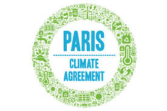
Paris Anlaşması
195 ülke ve Avrupa Birliği (toplam 196 taraf), küresel ısınmayı 2°C'nin belirgin şekilde altında tutmayı ve mümkünse 1,5°C ile sınırlamayı taahhüt etti. Ülkeler her yıl COP zirvelerinde emisyon hedeflerini (NDC) güncelliyor; 2023'teki ilk Küresel Stok Alma değerlendirmesi, taahhütlerin ne kadarının gerçek azaltıma dönüştüğünü resmen ölçtü.
NASA'nın İklim Gözlem Filosu
NASA'nın Yer Sistemi Gözlemevi (Earth System Observatory) kapsamındaki uydular iklim değişikliğini uzaydan izliyor: OCO-2/OCO-3 atmosferdeki karbondioksiti, GRACE-FO ikiz uyduları Grönland ve Antarktika buz tabakalarının aylık kütle kaybını, NASA-ISRO ortak görevi NISAR ise ormanlardaki ve buzullardaki değişimi santimetre hassasiyetinde ölçüyor. Bu veriler dünya çapındaki iklim politikalarının bilimsel temelini oluşturuyor.
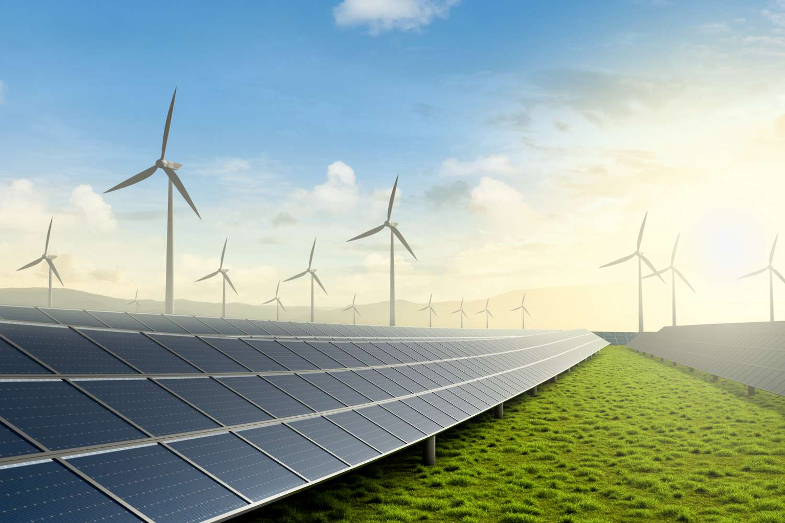
Çin'in Güneş Enerjisi Atılımı
Çin, 2023'te tek başına dünyanın yeni güneş enerjisi kapasitesinin yarısına yakınını, yaklaşık 217 GW'ı kurdu. Güneş panellerinin maliyeti son on yılda %80 düştü; bugün dünyanın çoğu bölgesinde güneş ve rüzgâr enerjisi yeni kurulan fosil yakıt santrallerinden daha ucuz.
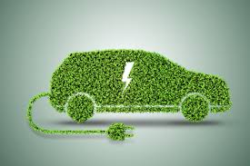
Norveç'te Elektrikli Araç Devrimi
Norveç'te 2024'te satılan yeni araçların %88,9'u tam elektrikliydi; bu dünyada bir ilk. Vergi muafiyetleri, otoyol ücretlerinde indirim ve yaygın şarj altyapısı bu dönüşümü on yıldan kısa sürede gerçekleştirdi; büyük otomotiv üreticileri de içten yanmalı motordan çıkış takvimleri açıklıyor.
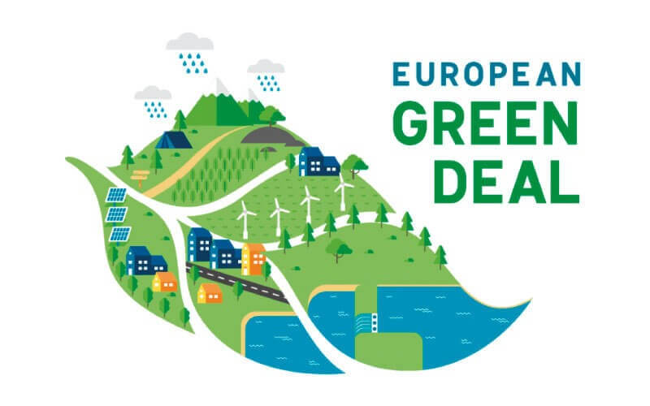
Avrupa Yeşil Mutabakatı
Avrupa Birliği, 2050'ye kadar net sıfır emisyon hedefini yasal olarak bağlayıcı hale getiren Yeşil Mutabakat'ı kabul etti. Karbon sınırında düzenleme mekanizması (CBAM) ve sıkı emisyon hedefleri artık yürürlükte, üye ülkelerin politikalarını doğrudan şekillendiriyor.
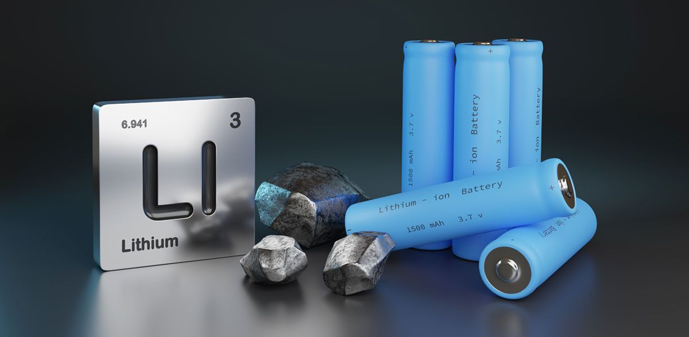
Bataryada Atılım
Lityum-iyon batarya maliyetleri 2010'dan bu yana %90'ın üzerinde geriledi. Bu düşüş, hem elektrikli araçları hem de şebeke ölçekli enerji depolamayı fosil yakıtla ekonomik olarak rekabet edebilir hale getirdi.
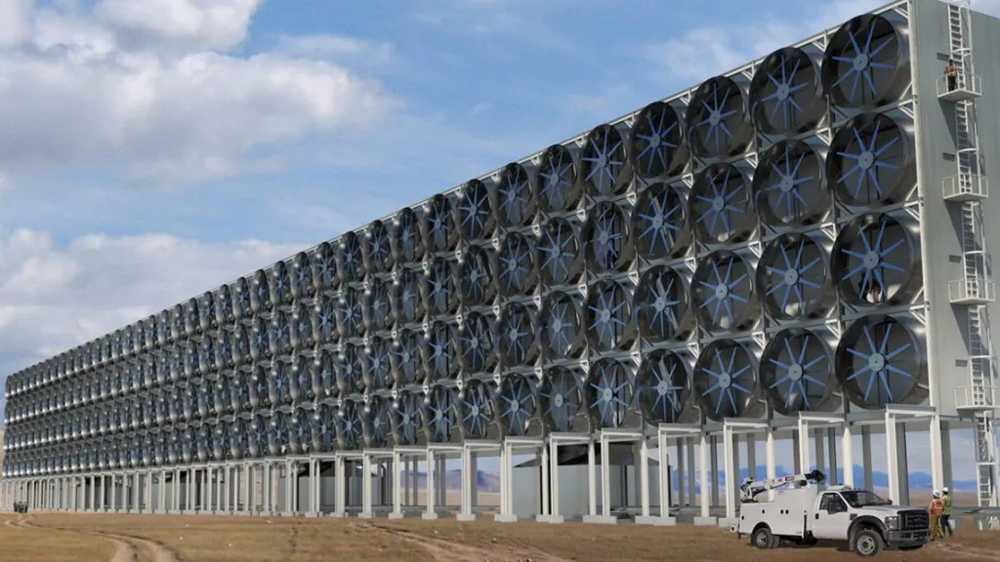
Climeworks'ün Karbon Yakalama Tesisi
İsviçreli Climeworks, 2024'te İzlanda'da dünyanın en büyük doğrudan hava yakalama (DAC) tesisi Mammoth'u devreye aldı; tesis tam kapasitede yılda 36.000 ton CO₂'yi doğrudan havadan çekip yer altında bazalt kayaçlara mineralize ediyor. Benzer tesisler dünya genelinde çoğalıyor.
Daha Fazla Öğrenin
Bu sayfa bir başlangıç noktası. İklim krizini daha derinlemesine anlamak isteyenler için güvenilir kaynaklar derledik.
UN Climate Action
Birleşmiş Milletler'in küresel iklim politikaları, anlaşma takibi ve resmi karar süreçlerine dair kapsamlı kaynak merkezi.
- Paris Anlaşması'nın takibi ve uygulanması
- Ulusal katkı beyanları (NDC) raporları
- İklim finansmanı mekanizmaları
- COP zirve süreci ve karar metinleri
NASA Climate
NASA'nın uydu gözlemleriyle beslenen, sürekli güncellenen küresel iklim verileri ve görselleştirmeleri.
IPCC
Hükümetlerarası İklim Değişikliği Paneli, binlerce bilim insanının katkısıyla hazırlanan değerlendirme raporlarının resmi kaynağı.
- 1988IPCC kuruldu
- 20074. Değerlendirme Raporu
- 2015Paris Anlaşması'na bilimsel temel
- 20236. Değerlendirme Sentez Raporu
Our World in Data
CO₂ ve sera gazı emisyonlarına dair açık, güncel verilerle desteklenmiş kapsamlı görselleştirmeler ve analizler.
Breaking Boundaries
BelgeselDavid Attenborough'un anlattığı, gezegenin ekolojik sınırlarını bilimsel verilerle ele alan Netflix belgeseli.
Our Planet
BelgeselDünyanın en kırılgan ekosistemlerini ve iklim değişikliğinin bu ekosistemler üzerindeki etkisini gözler önüne seren Netflix belgesel serisi.
An Inconvenient Truth
BelgeselAl Gore'un iklim krizine küresel farkındalık kazandıran, alanının öncü yapımlarından belgesel filmi.